Typography styles reduced
Typography is the backbone of any design system. For consistency, scalability, and developer handoff, I created a token-based typography system that defines font sizes, line heights, and font weights as reusable design tokens.
How I transformed inconsistent typography into a robust, token-based design system that improved consistency, developer efficiency, and scalability across our entire product.
Typography styles reduced
Design and dev consistency
Faster implementation
The outcome was a typography library that:
One shared language for typography across the product.
Ready-to-use tokens reduce repetitive decisions and handoff friction.
A system that can grow without introducing new inconsistencies.
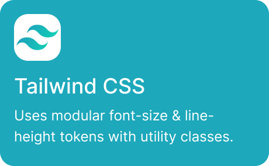
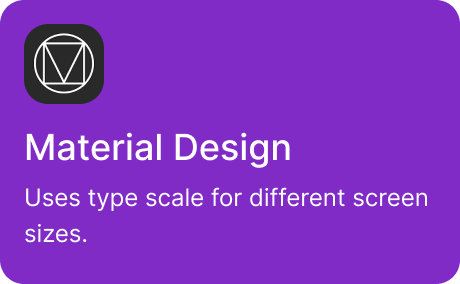
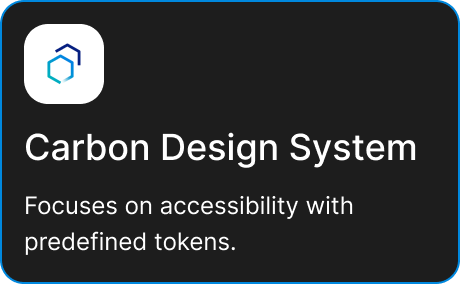
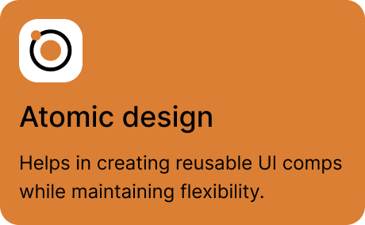
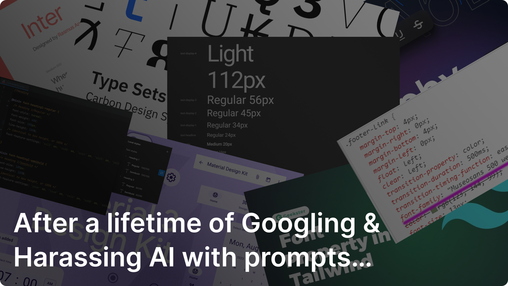
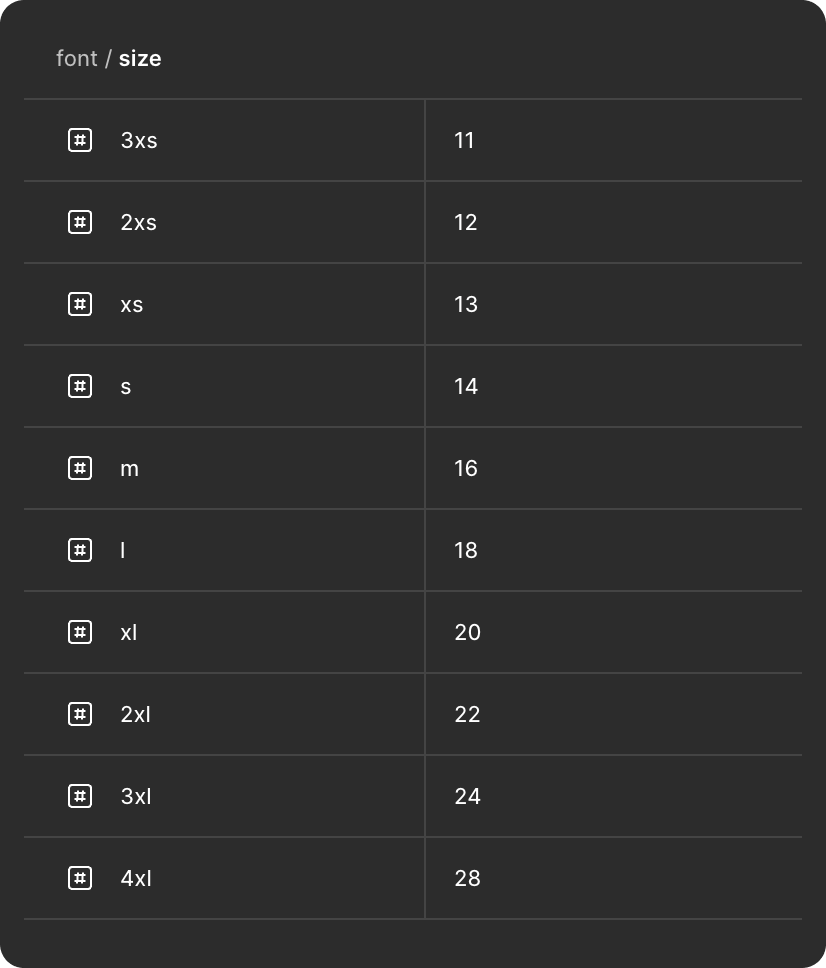
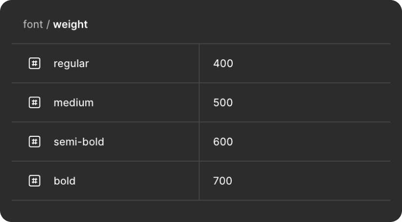
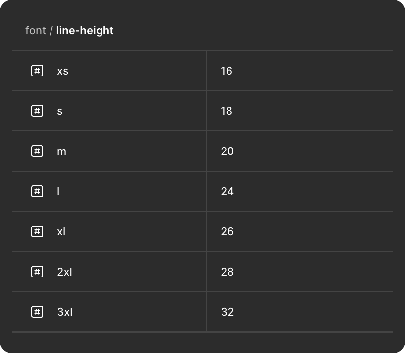
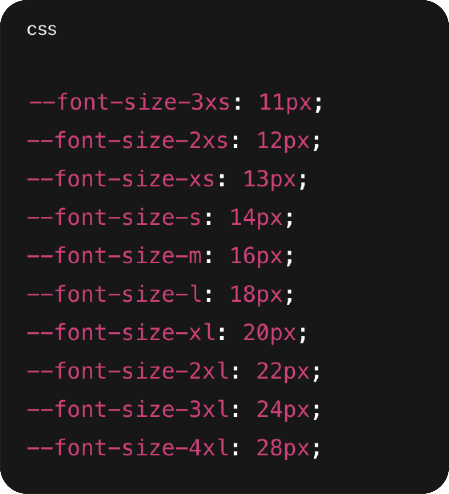
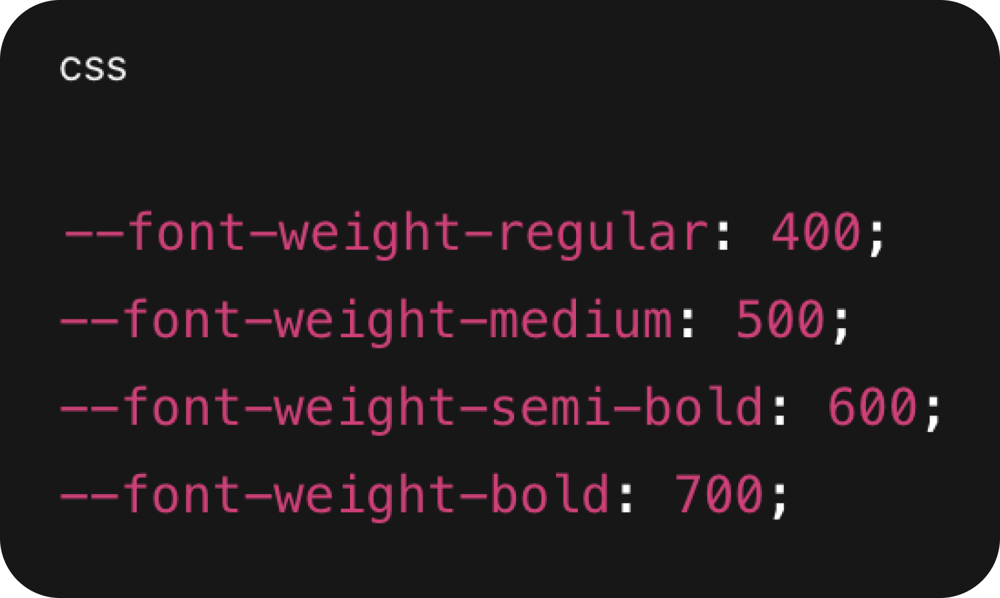
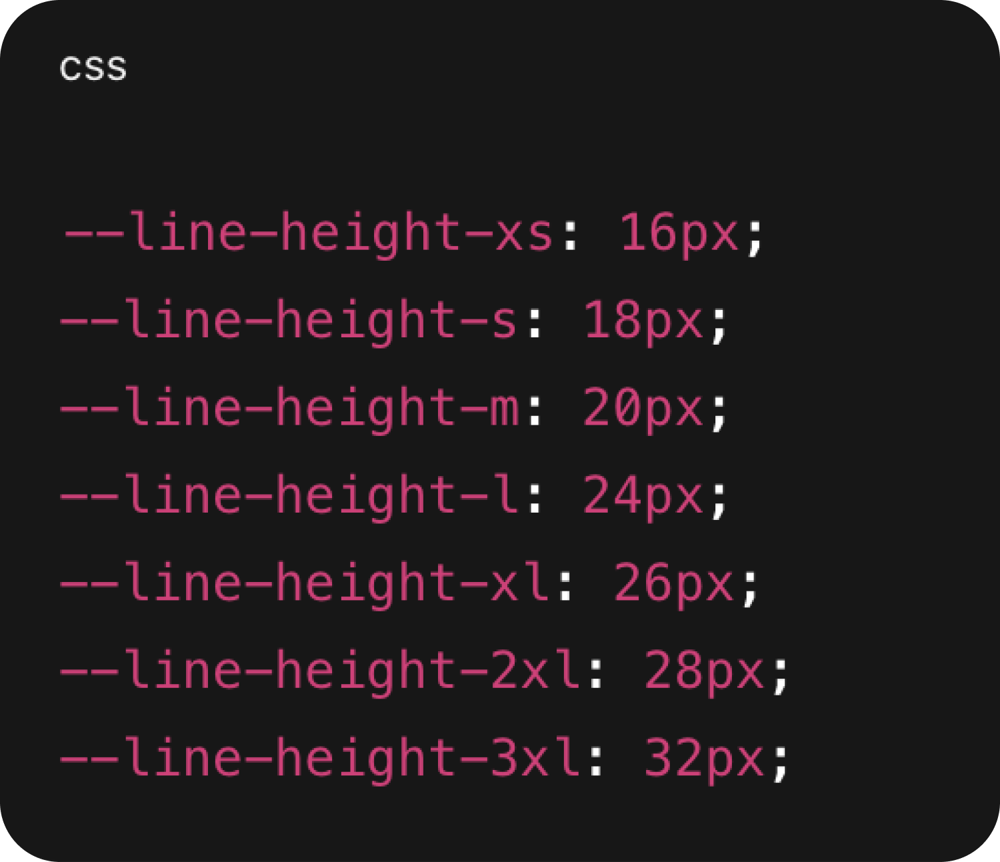
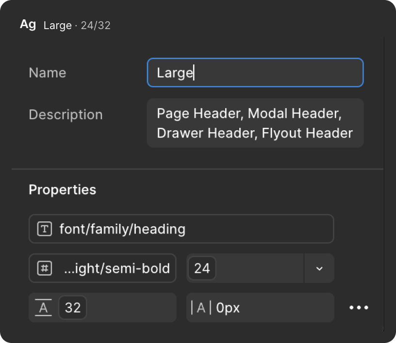
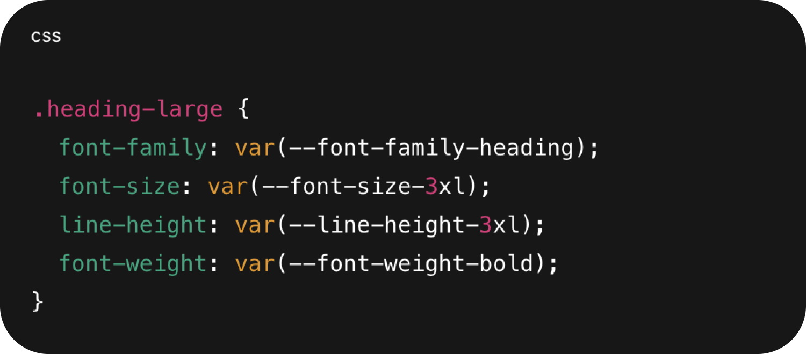
The typography system created measurable improvements across design consistency, developer productivity, scalability, and accessibility.
Designer and developer work with the same values.
Reduce design and development sync issues.
Adding a new size or weight is easy.
Line height helps ensure readability across the platform.
I used AI as a force multiplier throughout the project, while keeping the design decisions, validation and implementation alignment grounded in the needs of the product and team.
Used AI to accelerate exploration, structure ideas, validate approaches and reduce repetitive work while I owned the design direction.
Worked closely with developers to make sure Figma variables translated cleanly into CSS custom properties and production-ready patterns.
Focused on a smaller, reusable system that designers and developers could understand, adopt and scale together.